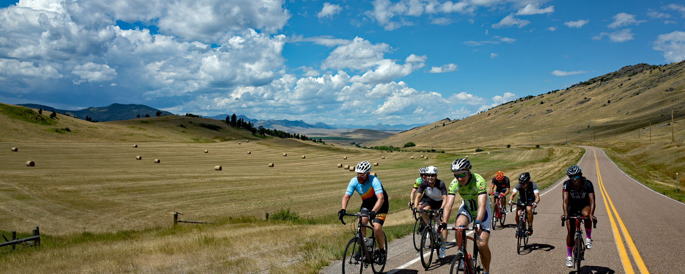
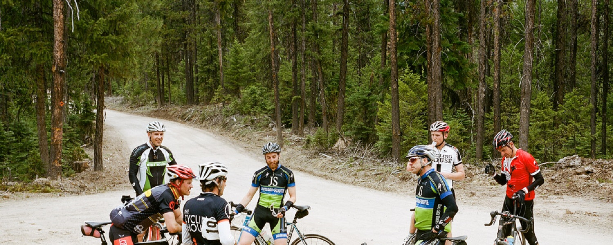

Adventure Tours
Glacier to Yellowstone
This is the most challenging trip that we offer. The ride starts in West Glacier and finishes in Red Lodge. In one week, we’ll cross the Continental Divide, pedal over Going-to-the-Sun Road in Glacier National Park, then parallel the Rocky Mountain Front before heading south to Yellowstone and Beartooth Pass Highway. Going-to-the-Sun Road is a must-do ride in itself – with breathtaking views of U-shaped valleys, mountain lakes, rivers, glaciers, and one of the most complete ecosystems in the world. The first day’s riding is epic, but don’t worry – the rest of the trip has incredible rides with rolling hills, views of the Rocky Mountains, and overnights in small Montana towns.
Cost: $1,995/Person
Dificuty: Expert
Location: Western Montana
Duration: 7 Days
Western Montana Gravel Backcountry
The Montana Gravel Tour starts and finishes in Missoula, MT, and is a culmination of our appreciation for gravel grinding in Western Montana. The tour incorporates the best routes TCH has pedaled around our home base for the past 15 years. For this camp, we base ourselves out of the E Bar L Ranch, 35 minutes from downtown Missoula. Here we will have indoor accommodations and start each day’s ride with a hearty breakfast from the ranch. We are proud to work with the folks at E Bar L Ranch – they hold similar values to the Cycling House: family style dining, healthy-outdoor lifestyle, and fun, fun, fun. Riders will enjoy stunning scenery and be amazed by the relative absence of other people, cars, and noise. The cooler fall temperatures make for great riding conditions.
Cost: $2,295/Person
Dificuty: moderate
Location: Missoula, MT
Duration: 5 Days